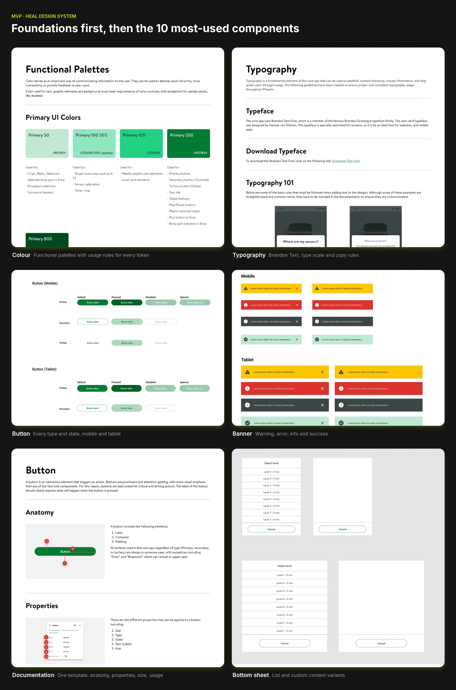
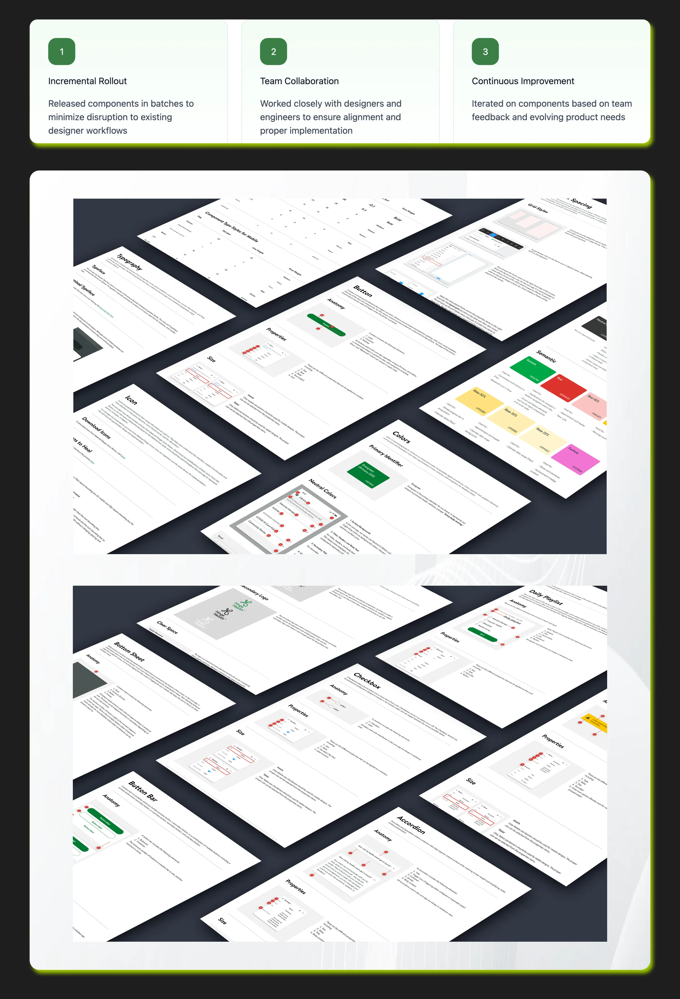
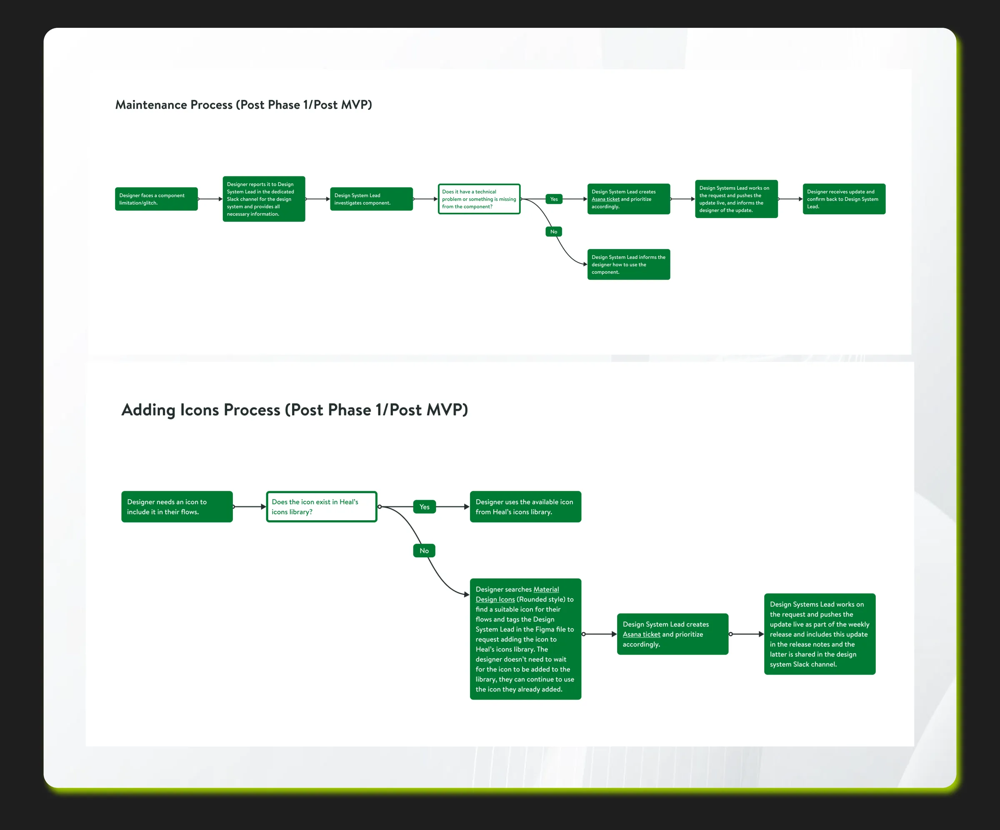

Problem Statement
How might we streamline the creation and shipping of new features while ensuring high quality standards across all product teams?
Role & Responsibilities
As the Lead Product Designer, I owned the creation and rollout of the company’s first design system. I defined the roadmap, rollout plan, and adoption strategy, while mentoring other designers to contribute effectively.
I presented the initiative to the co-founders and broader company to evangelize design system principles and secure executive sponsorship. I built, documented, and maintained scalable design foundations and governance processes.
I led a small team of product designers. I onboarded new designers to the project, ran a weekly grooming session where I assigned tasks, checked on progress and removed any blockers, and oversaw design quality before anything shipped.
MVP
I championed the creation and adoption of our design system, presenting its vision and benefits to the company’s co-founders and entire team to build excitement and alignment. I audited all Figma files, consolidated colors, typography, icons, and components, and used analytics to identify the top 10 most-used elements—packaging them into a streamlined MVP for scalable implementation.

Post MVP
For post MVP, I wanted to have less impact on designers’ files, and so whenever a group of components and styles were created and documented, I shared them with the team. I continued to closely collaborate with the designers on the team to ensure accurate design and documentation, as well as with the front end engineers to ensure proper implementation.

Research, Options & Trade-offs
What research revealed
The Figma audit showed the same components rebuilt many times across files, with inconsistent colours and type. A small set of elements covered most usage.
Directions explored
- Option A: Build the full library before rollout. Dropped: too slow, and teams would keep diverging in the meantime.
- Option B: Ship an MVP of the top 10 most-used elements, then grow in batches. Chosen.
Trade-offs
Early releases covered fewer components, so some squads kept local versions for a while. We accepted that in exchange for adoption starting months sooner.
Processes
Processes are crucial when working with design systems, they provide guidance and create discipline. I created a maintenance processes and shared it with the team to guide them how to report glitches, bugs, or limitations when it comes to components and styles.
In addition to that, I created the contribution process of icons including where to download them and how to add them to the design system.

Results
32 components, used by 30 designers and 65 developers, and features shipped 40% faster.